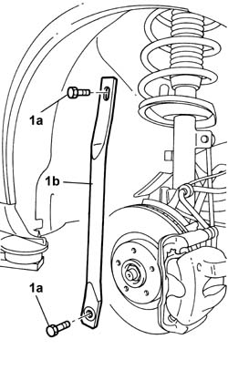
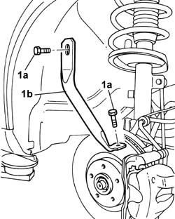
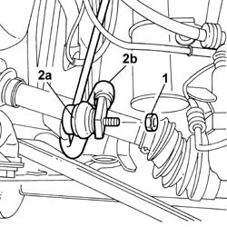
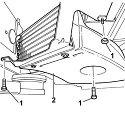
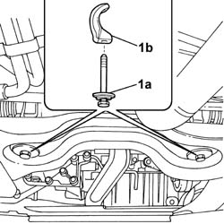
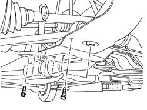
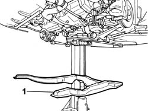

4410D10 FRONT SUSPENSION FRAME - R+R
- Path
- Procedures > 44 SUSPENSION AND WHEELS > 4410 FRONT SUSPENSION > 4410D FRAME AND CROSSMEMBER > 4410D10 FRONT SUSPENSION FRAME - R+R
- Kind
- repair procedure (removal / refitting; the operation number is the code)
- Applies to
- all engines; all production periods
- Interactive page
- https://sloeber94.github.io/elrnDB-fUlss/en/#/179007380
Applies to: all engines; all production periods
 Removing
Removing
 Refitting
RefittingSee
Op. 7055B54 UNDER ENGINE PROTECTION/GUARD - R.R.
See
Op. 4450B12 FRONT WHEELS (TWO) - R+R
See
Op. 7055B64 ENGINE COMPARTMENT DUST PROTECTION IN FRONT WHEEL ARCH LINER (ONE) LEFT OR RIGHT - R.R.
Carry out the same operation fon both sides.
1. Undo bolts (1a) and remove connecting link (1b).

Applies to: all engines; all production periods
Carry out the same operation fon both sides.
1. Undo bolts (1a) and remove connecting link (1b).

Applies to: all engines; all production periods
Carry out the same operation for both sides.
1. Undo the nut.
2. Move the rod end (2a) away from the housing in the anti-roll bar (2b).

Applies to: all engines; all production periods
1. Undo the nuts and the bolts fixing the air duct.
2. Partly remove the air duct.

Applies to: all engines; all production periods
1. Undo the bolts (1a) fixing the power assisted steering box and keep the fastening devices (1b).

Applies to: all engines; all production periods
See
Op. 1008C30 POWER UNIT LOWER REACTION LINK - R.R.
See
Op. 1088B32 ENGINE COOLING RADIATOR SUPPORT CROSSMEMBER - R.R.
Position a hydraulic lift to support the front suspension frame.
Release the power assisted steering fluid pipes from the fastening clips.
Carry out the same operation for both sides.
1. Undo the bolts fixing the suspension crossmember and the lower track control arms.

Applies to: all engines; all production periods
1. Lower and remove the front suspension frame using the hydraulic lift and, at the same time, also remove the anti-roll bar.

Applies to: all engines; all production periods
Refitting
RemovingRaise the suspension including the anti-roll bar with the help of the hydraulic lift and screw in the fastening bolts without tightening them.
Tighten the bolts fixing the lower track control arms and the anti-roll bar to torque.
Component | Fastening | dia | Value daNm |
|---|---|---|---|
LOWER FRONT TRACK CONTROL ARMS | Bolt | 7,0 |
Secure the power assisted steering fluid pipes to the retaining clips.
See
Op. 1088B32 ENGINE COOLING RADIATOR SUPPORT CROSSMEMBER - R.R.
See
Op. 1008C30 POWER UNIT LOWER REACTION LINK - R.R.
Remove the hydraulic lift.
Renew the devices fastening the steering box to the suspension frame and screw in the bolts without tightening them.
Fit the air duct and tighten the nuts and bolts.
Fit the track control rods in place and screw in the fixing nuts without tightening them.
Fit the rods connecting the bodyshell and the front suspension frame and screw in the fixing bolts without tightening them.
See
Op. 4450B12 FRONT WHEELS (TWO) - R+R
Check that the tyre inflation pressure is within specified values.
1. Using the special tool, compress the front suspension so that height H1 (reference) measured between the bent edge and the ground is:
Applies for versions to 02/2004
Subject | Value | |
|---|---|---|
H1 | FRONT WHEEL GEOMETRY (With 205/65 R15 tyres) | mm 167+12/-10 |
Subject | Value | |
|---|---|---|
H1 | FRONT WHEEL GEOMETRY (With 215/65 R15 tyres) | mm 171+12/-10 |
Subject | Value | |
|---|---|---|
H1 | FRONT WHEEL GEOMETRY (With 215/60 R16 tyres) | mm 175+12/-10 |
Valid for versions from 02/2004
Subject | Value | |
|---|---|---|
H1 | FRONT WHEEL GEOMETRY (With 215/65 R15 tyres) | mm 171+12/-10 |
Subject | Value | |
|---|---|---|
H1 | FRONT WHEEL GEOMETRY (With 215/65 R16 tyres) | mm 175+12/-10 |
Applies to: all engines; all production periods
Tighten the fixing nuts and bolts to the recommended torque.
Value daNm | Fastening | Component | dia | |
|---|---|---|---|---|
. | 10.5 | Bolt | FRONT SUSPENSION SUBFRAME |
Value daNm | Fastening | Component | dia | |
|---|---|---|---|---|
. | 14.5 | Bolt | POWER STEERING BOX |
Value daNm | Fastening | Component | dia | |
|---|---|---|---|---|
. | 6.5 | Nut | FRONT ANTI-ROLL BAR |
Value daNm | Fastening | Component | dia | |
|---|---|---|---|---|
. | 6.5 | Bolt | LINK CONNECTING BODY TO SUSPENSION SUBFRAME |
Value daNm | Fastening | Component | dia | |
|---|---|---|---|---|
5.5 | Nut | CONNECTING ROD ON FRONT ANTIROLL BAR |
Remove the tool positioned previously.
Description | Code | Function | |
|---|---|---|---|
. | Tool kit | Suspension pre-loading |
See
Op. 7055B64 ENGINE COMPARTMENT DUST PROTECTION IN FRONT WHEEL ARCH LINER (ONE) LEFT OR RIGHT - R.R.
[both sides]
See
Op. 7055B54 UNDER ENGINE PROTECTION/GUARD - R.R.
Remove the vehicle from the lift.
See
Op. 4450A10 FRONT WHEEL GEOMETRY - CHECK USING OPTICAL EQUIPMENT - INCLUDES ADJUSTMENT IF NECESSARY
Topics linked from this page (6)
- 1008C30 POWER UNIT LOWER REACTION LINK - R.R.
- 1088B32 ENGINE COOLING RADIATOR SUPPORT BEAM - R R
- 4450A10 FRONT WHEEL GEOMETRY - CHECK USING OPTICAL EQUIPMENT - INCLUDES ADJUSTMENT IF NECESSARY
- 4450B12 FRONT OR REAR WHEELS (TWO) - R+R
- 7055B54 UNDER-ENGINE GUARD - R R
- 7055B64 LH OR RH REFLECTOR(ONE) ON REAR BUMPERS - R R